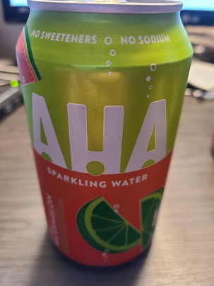
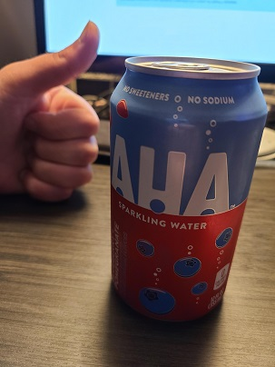

| Welcome | Why Seltzer | Why I Fell in Love with Seltzer | Reasons to Drink Seltzer | The Bubbly Goodness in a Sip |
I'm in the Army and I'm trying to achieve my bachelor’s in computer Programming from Southwestern College Kansas. I love all things computers, but at times I become a little tired of staring at a screen and just want to go outside and see the scenery or socialize with other folks. My hopes is to use the title of having a “Bachelors” as a potential for future promotions in the Army and my Civilian career.
I’m a simpleton. I enjoy drinking fizzy drinks. In particular, I love to drink carbonated drinks. I try to maintain my weight, so carbonated water with infused flavors is all that I’m about. I’ve drinking many various brands of seltzer water and I will admit that I was very unimpressed by the named brands compared to lesser known brands. A warning to the future sparkling water drinkers, just because its made by the Coca-Cola factory doesn’t mean that it taste all great. In fact, sometimes these big companies try too hard to over flavor a bubbly drink to the point that it’s just not satisfying.
The drinks I talk about come in different names: Seltzer water, carbonated water, sparkling water, bubbly water, and other words. I wan tot make it clear that we are speaking about here does not include any drink that has sugar or artificial sweeteners. Everything is just carbonated or maybe with the hint of sodium, which helps stabilize or aid the carbonated water.
Some of the current drinks I’m enjoying now are limited because I’m in Georgia and not at home.


Do not be confused by my thumbs up. I'm merely indicating that it's a little better than the watermelon and cucumber flavor.
Aha, by Coca-Cola is what I’m drinking now. They are ok, but for me the taste is a bit subtle and soft. I like the hard crisp bubbly taste. You can visit more of their options on AHA’s website.
Another choice I would consider, due to it’s crisp seltzer carbonation is Polar Seltzer.
Why do I drink carbonated water oppose to regular drinks? Well of course I love the bubbly, but I do try to maintain my calorie intake for the day. My favorite calorie calculator is Calculator.net. The website is simple and spares me any “warnings or “cautions” that other sites tend to want to post.